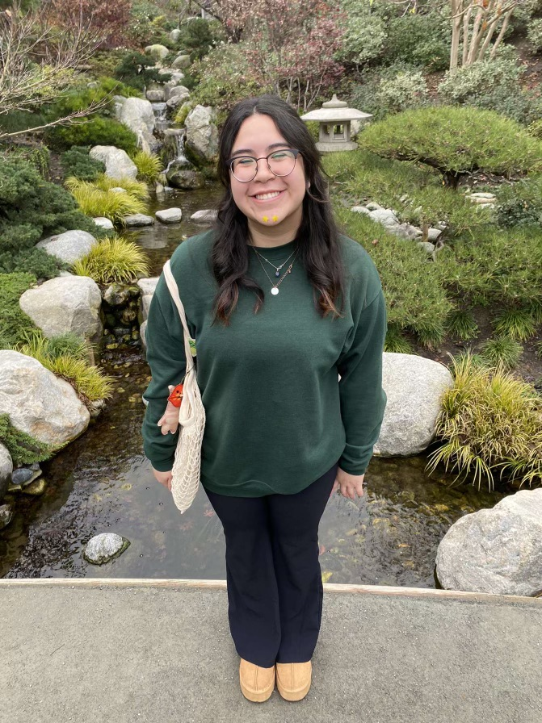

Let me introduce myself!
Hi! My name is Alexis Vega, and I was born and raised in beautiful San Diego, California. I'm currently a third-year Computer Science major with a minor in Cognitive Science at the University of California, San Diego. My passion for technology comes from a love for blending creativity with logic, and I'm always eager to explore its limitless possibilities.
Beyond academics, I enjoy staying active, exploring new cuisines, and searching for the best strawberry drinks. My curiosity about how things work has led me to pursue projects that solve real-world problems, and I'm particularly drawn to those that make a meaningful impact.
I'm always looking for opportunities to expand my knowledge through research, internships, and hands-on projects. Whether it's coding, tutoring, or collaborating with peers, I strive to grow, challenge myself, and contribute to innovative solutions.
| Coding Languages | Relevant Courses | Clubs | Interests in Computer Science |
|---|---|---|---|
|
|
|
|
More about me:
Meet my Dog:
One big thing about me is I love my dog Suki

My Favorite Music:
I love music and would have to say The Beatles and Tyler the Creator are my favorite
Here's one of my favorite Beatles songs:
I love everything that lets me be creative:
I love...
Painting
Drawing Ceramics
Jewlery Making
Scrapbooking Origami
Baking
Videography Cooking Photography
Playing Piano & Ukulele
and im always looking to pick up more hobbies!
I hope you were able to learn more about me!
function thankYou(name) {
console.log("Thank You, " + name);
}
thankYou("Reader");
More Fun Facts:
Favorite Language
Java is my favorite coding language!
Favorite thing to do on the weekend
Thrifting and hanging out with my friends
Favorite Color
Blue
Favorite place for strawberry drinks
Arteazan: Korean Strawberry Milk would be number one and Sunright Tea Studio: Strawberry Frostie would be my runner up